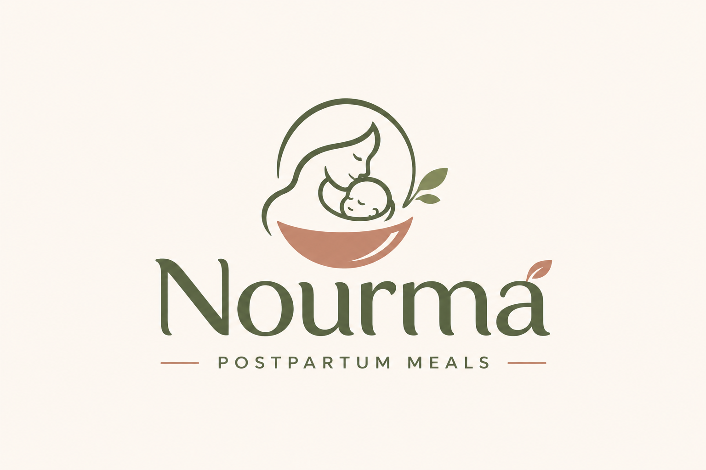

FLEKSIBEL
Paket Harian
Untuk kebutuhan makan sehari-hari dengan menu yang disesuaikan ketersediaan.
- Pilihan menu harian
- Konfirmasi jadwal
- Informasi harga melalui Nourma

PAKET NOURMA
Temukan pilihan catering yang sesuai dengan kebutuhan Ibu. Durasi, menu, harga, dan area pengiriman akan dikonfirmasi langsung oleh Nourma.
Untuk kebutuhan makan sehari-hari dengan menu yang disesuaikan ketersediaan.
Opsi catering untuk membantu Ibu merencanakan hidangan selama beberapa hari.
Diskusikan preferensi dan kebutuhan makan Ibu secara langsung.
Paket dan harga di atas masih berupa konsep. Informasi final perlu dikonfirmasi sebelum pemesanan.
Halo, Ibu! Pilih cara untuk bertanya tentang menu dan paket Nourma.
Chat via WhatsApp ↗ AI chat demo: jawaban dasar. WhatsApp perlu nomor resmi Nourma.Nourma hanya mengumpulkan informasi yang Anda berikan secara sukarela, seperti nama dan nomor WhatsApp saat Anda menghubungi kami untuk informasi menu atau paket.
Informasi Anda digunakan semata-mata untuk merespons pertanyaan dan permintaan layanan Nourma. Kami tidak menjual, menyewakan, atau membagikan data pribadi Anda kepada pihak ketiga untuk tujuan pemasaran.
Kami menjaga kerahasiaan informasi Anda dan hanya menggunakannya untuk keperluan komunikasi layanan Nourma.
Website ini menggunakan localStorage hanya untuk menyimpan preferensi privasi Anda di perangkat ini. Tidak ada cookie pelacak pihak ketiga yang digunakan.
Jika Anda memiliki pertanyaan tentang kebijakan privasi ini, silakan hubungi kami melalui WhatsApp yang tertera di halaman Hubungi Kami.